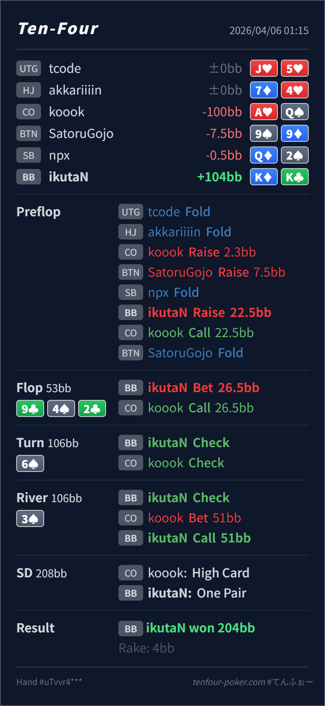

Preflop
良いKK は cold 4bet の主力です。
主論点は、4bet pot の overpair を flop で取り、turn で止め、river で bluff-catch に回す設計ができているかです。当時の思考メモはないので、「turn でもう一発打ちたくなる」「river で不安になって fold したくなる」という仮定で見ます。結論は、line 全体がかなりまとまっていて、再レビューでも大きなズレは見えません。
K♦K♣9♣ 4♦ 2♣ / 6♠ / 3♦turn でもう一発打ちたくなる、または river で pot control line を取ったあとに不安になる という仮定で見ます。K♦K♣2.3BB, BTN 3bet 7.5BB, BB 4bet 22.5BB, CO call, BTN fold9♣ 4♦ 2♣ / 6♠ / 3♦26.5BB, CO call51BB, BB call
良いKK は cold 4bet の主力です。
9♣ 4♦ 2♣良い
Hero は依然かなり前方で、value / protection を取りたい hand です。
6♠良いKK はまだ多くの hand に勝っていますが、無理に 3発で押し切る node ではありません。
3♦良い
Hero の KK はその range に対してかなり上位の bluff-catcher です。
| 論点 | その場で置きがちな見立て | どこがズレたか | 次回の基準 |
|---|---|---|---|
turn の KK | overpair でまだ前にいそうなので 2barrel したくなる | flop call 後の CO range は underpair、club draw、A-high の粘りが中心で、K♣ を持つ Hero は draw も一部 block しています。 | まだ強い と 3street 取り切れる は別。blocker も見て turn check を増やす |
| river の bluff-catch | turn check-back のあとに bet されると弱気になって fold したくなる | CO は turn で cap しやすく、AQ/AK, QQ-JJ のような bluff-catcher / air も十分残ります。KK はかなり上位の call hand です。 | 誘ったあとの river では、上位 bluff-catcher を素直に守る |
| ストリート | その時点の見え方 | 判断の焦点 | 評価 | 推奨 |
|---|---|---|---|---|
| Preflop | CO が 4bet を call する range は QQ-JJ, AK, AQs 周辺に寄りやすいです。 | KK は cold 4bet の主力です。 | 良い | 22.5BB は素直です。 |
Flop 9♣ 4♦ 2♣ | CO の call range には QQ-JJ, TT, A♣K♣ 系、AK/AQ の一部が残ります。 | Hero は依然かなり前方で、value / protection を取りたい hand です。 | 良い | c-bet は自然です。 |
Turn 6♠ | flop call 後の CO range は underpair、club draw、A-high の粘りが中心です。 | KK はまだ多くの hand に勝っていますが、無理に 3発で押し切る node ではありません。 | 良い | check で十分です。 |
River 3♦ | turn check-back で CO はかなり cap し、AQ/AK, QQ-JJ, 一部 slowplay に寄ります。 | Hero の KK はその range に対してかなり上位の bluff-catcher です。 | 良い | check-call が自然です。 |
KK のような overpair でも、blocker と相手の cap を見れば turn check は十分強い選択になります。KK まで降ろすと守りすぎ不足になりやすいです。AQ/AK を素直に river bluff に回す相手が混じるなら、今回の call はかなり取りこぼしを防げています。